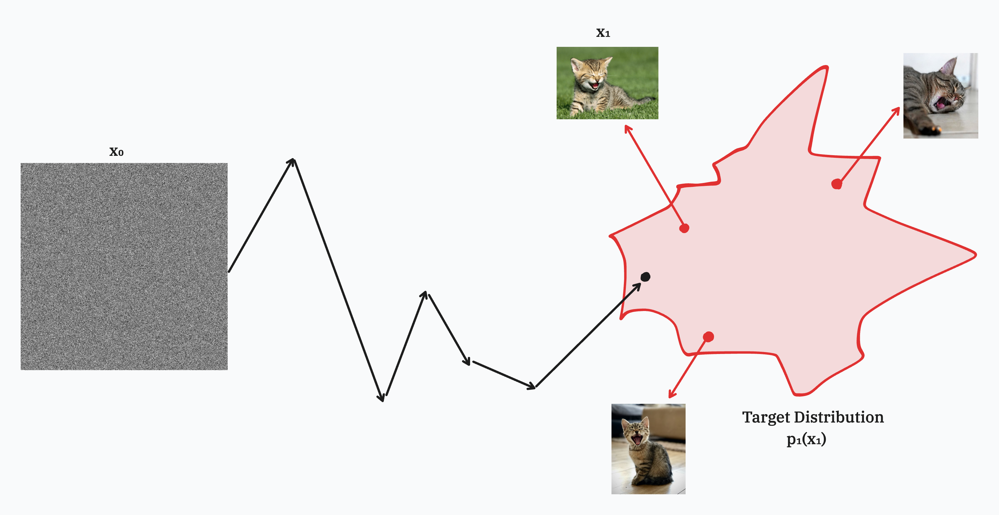

Visualizing Flow Matching in Robotics
In this post, I walk through flow-matching basics, explain its role in VLAs like $\pi_{0.5}$, then dive into visualizations of how noise becomes coherent actions. I hope I can share some of my appreciation for flow matching with you.
Introduction to Flow Matching
Imagine starting with pure static, the kind that’s on the TV screen when the weather gets stormy. Now imagine guiding that chaos into a cat mid-yawn, a piano playing Mozart’s 40th symphony, or a robot making you the perfect coffee. This is exactly what flow matching allows us to do.
The way it works is, we model the initial noise as a probability distribution we can easily sample from, like the Gaussian distribution. Then we transform this noise by pushing and pulling it across a high-dimensional space until it lands in the target distribution, in our case, that’s cats during mid-yawns.

Introducing some notation here, we can denote the noisy distribution by $p_0(x_0)$ and the target distribution by $p_1(x_1)$. Correlating this with our cat example, $x_0$ denotes a sample from the Gaussian distribution, and $x_1$ is a picture of our cat mid-yawn. Now we don’t actually know the target distribution, we only have samples from it. We need to learn a representation that allows us to learn the direction and magnitude to move any point in space at any timestep closer to the target distribution. This can be modelled by a vector field.
The issue here is that we don’t have access to the ground-truth vector field either. Instead, the solution is to work with individual trajectories. Both $x_0$ (noise) and $x_1$ (a cat image) are just vectors in high-dimensional space. Now the simplest way to get from $x_0$ to $x_1$ is by a straight line, or more precisely by travelling along $x_1 - x_0$. We can represent the position of a sample at any timestep along this direction as:
$$ x_t = (1 - t)x_0 + t x_1 $$
where $t \in [0,1]$. At $t=0$, we’re at pure noise. At $t=1$, we’re at the cat image. The velocity along this path, i.e., the direction we should be moving along with the magnitude, can be modelled as:
$$ u_t = \frac{dx_t}{dt} = x_1 - x_0 $$
We train a neural network $v_{\theta}(x_t, t)$ to predict velocities for many $(x_0, x_1)$ pairs sampled at many different timesteps. Now, it turns out that despite training only on individual trajectories, the neural network learns a vector field that transforms any point from the noisy distribution to the target distribution. It doesn’t memorize specific paths, but instead learns an average flow that transforms TV static into cute cat images.
Flow Matching in Vision-Language-Action Models (VLAs)
Just like how noise can be transformed into cats yawning, we can also transform this noise into actions for the robot to follow. Vision-Language-Action Models are a new paradigm in an attempt to solve general robotics. At its core, it’s a model with a pretrained backbone which is trained on large-scale vision-language data and subsequently trained to generate actions for the robot to execute. Without diving deeper into the intricacies of VLA’s in general, let’s take $\pi_{0.5}$ from Physical Intelligence as an example.
You provide the model with an instruction for the task it needs to accomplish, for example, making coffee, then the model has a two-stage control loop. The model first predicts a textual subtask, which will help it accomplish the main goal. This is conditioned on observations that include images from all cameras, the robot’s proprioceptive state (joint angles, gripper pose, torso lift pose, base velocity), and the user’s task. Then, a lower-level controller is conditioned on the textual subtask along with the observation to produce continuous action chunks. Mathematically, the paper represents this as: $$ \pi_{\theta}(a_{t:t+H}, \hat{\ell} \mid o_t, \ell) = \pi_{\theta}(a_{t:t+H} \mid o_t, \hat{\ell}) \pi_{\theta}(\hat{\ell} \mid o_t, \ell), $$
where $\ell$ is the user’s original task prompt, $\hat{\ell}$ is the model’s generated subtasks, $o_t$ denotes observation at time $t$, and $a_{t:t+H}$ is the action chunk, where it predicts $H+1$ actions. $H$ here is called the action horizon. The high-level inference (coming up with subtasks) is captured by $\pi_{\theta}(\hat{\ell} \mid o_t, \ell)$, and the low-level inference is captured by $\pi_{\theta}(a_{t:t+H} \mid o_t, \hat{\ell})$.
$\pi_{0.5}$ cleverly uses both autoregressive generation for these action chunks as well as flow matching. Autoregressive generation of action tokens is extremely good for scalable pre-training, but they’re not as well-suited for real-time inference, since they require expensive autoregressive decoding, which is problematic for high-frequency control. This is where flow matching comes into the picture, it gives us continuous trajectories with fixed-step generation for real-time control. Unlike our cat example earlier, flow matching here is conditional denoising; it’s not just learning “how to remove noise” in the void, it’s learning how to remove noise given the current scene, the robot’s state and the task that needs to be accomplished.
An interesting detail here is that, instead of naively concatenating the timestep with the noisy actions and passing it through the transformer layers, $\pi_{0.5}$ takes a different approach. It projects the timestep through a separate MLP and then applies adaptive RMSNorm to inject the timestep information into each layer of the action expert. The intuition here is that, instead of hoping the network keeps track of the timestep embedding throughout the layers, injecting the timestep via adaptive normalisation ensures that conditioning is present at every layer.
Visualizing Flow Matching
Let’s see what flow matching actually looks like in practice. As mentioned earlier, flow matching in $\pi_{0.5}$ is conditioned on both the observation and the initial task prompt. For the remainder of this section, I will use episode 0, frame 47, from the Mobile ALOHA dataset, where the robot receives the instruction: “Pick up the pan, rinse it in the sink and then place it in the drying rack.” Why frame 47? Other than the fact that prime numbers are cool, nothing, the rest of the visualizations would have worked with any other observation and prompt.
What does the robot see at frame 47?
As you may have noticed, frame 47 was highlighted in red, showing the robot arm approaching the pan to pick it up, which was the first part of our task.
I ran $\pi_{0.5}$’s action expert for 10 denoising steps, starting from 50 different random noise initializations. Each seed is a $50 \times 32$ noise tensor sampled from $\mathcal{N}(0, I)$, all conditioned on the same observation (frame‑47’s three camera views + proprioceptive state) and the same prompt.
At each denoising timestep $\tau$, I collected the intermediate action chunk $a_{t:t+H}^\tau$ for all 50 seeds. This gives us the full denoising trajectory, showing how each random initialization evolves through the learned vector field to a coherent 50-step action sequence.
trajectory: (11, 50, 50, 32)
timesteps: (11,)
initial_noise: (50, 50, 32)
final_actions: (50, 50, 32)
observation_state: (14,)Breaking down the shape of the trajectory:
- 11: Total timesteps (initial noise + 10 denoising steps)
- 50: Number of noise seeds (to see how different initializations converge)
- 50: Number of actions in each action chunk
- 32: Action dimension (Mobile ALOHA uses 14D actions, but $\pi_{0.5}$ pads to 32 for robust cross-embodiment training)
Visualization 1: Do actions within a chunk form a coherent structure?
The first natural question I had was, since the policy predicts an action chunk of 50 sequential actions, does any structure emerge between these actions as denoising progresses? Since all actions live in 14-dimensional space (after removing padding), we need a way to project them into 2D/3D so we can visualize them. Thankfully, there are multiple techniques available here, including principal component analysis (PCA), t-distributed stochastic neighbour embedding (t-SNE), and uniform manifold approximation and projection (UMAP). For all of the visualizations hereafter, I’ve used principal component analysis (PCA).
To answer the question, I used a single noise seed and extracted all its actions across all timesteps, i.e., trajectory[:, seed, :, :14], giving us the shape of $(11, 50, 14)$. That’s 50 actions at each of the 11 denoising steps. I then fit PCA once on all $11 \times 50 = 550$ 14D action vectors from this initial noise seed across all denoising steps. Fitting PCA per-timestep would introduce discontinuities, making the frames incomparable. By fitting once across all timesteps, the 2D projection is consistent, allowing us to track how the action chunk evolves. After the projection, we have $(550, 2)$, which is then reshaped back to $(11, 50, 2)$ representing the 50 2D action vectors present in the action chunk at each denoising step.
Since we’re projecting from 14D space to 2D, it’s more than possible that the structure we see arising is misleading, due to which I’ve plotted the normalized L2 distance and cosine similarity across consecutive actions in the chunk, providing us with measurable geometric properties even in higher dimensions.
As you can see, regardless of the initial noise seed, as denoising progresses, we observe structure emerging within the actions in the action chunk. They go from completely unrelated to having a coherent, smooth structure. The normalised L2 distance drops sharply, meaning consecutive actions become much closer (the chunk becomes locally smoother), while the cosine similarity approaches 1, indicating that consecutive actions have become more directionally aligned in 14D space.
Together, these signals represent the emergence of smooth, locally consistent motion, in which actions flow naturally from one step to the next, forming a coherent trajectory for the robot to execute.
Visualization 2: Do particular actions converge despite noise seeds?
Next, I wanted to visualise how a single action at a fixed position in the chunk evolves during denoising and whether different noise seeds converge to similar final actions. For example, does the action at position $h=0$ (the first action in the chunk) always denoise to the same region of action space, regardless of what random noise it started from? To examine this, I extracted the action at a fixed horizon index $h$ across all seeds and denoising steps, i.e., trajectory[:, :, h, :14] → shape $(11, 50, 14)$. At each denoising step $k$, we have 50 different versions of “the h-th action”, one per noise seed. I then fit PCA across all 550 points ($50$ seeds × $11$ timesteps) in 14D space.
The first visualisation fit PCA using the same seed, all horizon indexes, and all timesteps. The second visualisation shows PCA across all seeds, using the same horizon index, and all timesteps.
Since PCA could lead to misinterpretation of structure, I also calculated the mean pairwise distance across the 50 actions at each denoising step as a quantitative measure of dispersion.
The results reveal a striking pattern of temporal certainty decay. For horizon index 0, which represents the immediate next action, the 50 seeds start scattered across the action space but then rapidly collapse into a tight singular cluster, with mean pairwise distance decreasing from 5.4 to 0.27. However, for horizon indices 10, 24, 40, and 49, while the seeds still converge into clusters, the final dispersion remains substantially higher. Most remarkably, plotting the final-step dispersion against horizon index reveals a smooth, monotonic progression. Actions at h=0 converge to within 0.27, while actions at h=49 remain dispersed at 1.77, over six times more variable.
This gradient of uncertainty isn’t necessarily a failure of the model but rather reflects learned temporal certainty. The flow matching process has internalized that immediate actions are nearly deterministic given the current observation, while future actions remain uncertain, since predicting observations dozens of timesteps ahead is extremely difficult. The model essentially reasons: “I know exactly what to do right now based on what I see, but the correct action 49 steps from now depends on future states I haven’t observed yet.” This empirical finding supports the design choices in the VLA literature, where receding-horizon control is standard practice, and models predict action sequences but execute only the first few actions before replanning with fresh observations.
Visualization 3: What does the vector field look like?
The previous two visualizations were about the action chunks, now I want to visualize the vector field, the flow which makes denoising happen in the first place.
First, I fit a PCA across all positions, timesteps, seeds, and action horizons. This means taking the trajectory of shape $(11, 50, 50, 14)$ and flattening it to $(27500, 14)$, where $27{,}500 = 11 \times 50 \times 50$. Fitting PCA to this gives a fixed projection that transforms the 14D points to 2D, i.e., $(27500, 2)$, which I then reshape back to $(11, 2500, 2)$, giving me 2500 2D positions at each of the 11 timesteps. Next, I computed velocities as finite differences between consecutive denoising steps by
$$ v_k = \frac{x_{k+1} - x_k}{\tau_{k+1} - \tau_k} $$
which has a shape (10, 50, 50, 14) since there are only 10 transitions between 11 timesteps. I projected these velocities using the same PCA components, giving velocity vectors of shape (10, 2500, 2). Now, at each timestep k, I have both the 2D positions and their corresponding 2D velocity vectors.
Since visualising 2500 arrows per frame can be extremely cluttering, there are different subsample visualisations present that show a fixed percentage of the trajectories. (This could honestly just be a footnote)
This does not visualize the ground-truth vector field across the entire action space. Rather, for a fixed observation $o_t$, the model defines a time-dependent conditioned vector field $v_{\theta}(x, t \mid o_t)$. By sampling many noise seeds and recording $(x_t, v_t)$ along the denoising trajectories, we get many on-manifold samples of this field. One seed gives vectors only along one trajectory, multiple seeds give broader coverage of the region of action space that the denoising process actually visits for that observation. This improves our estimate/visualization of the conditioned field in regions where data exist (especially in a chosen 2D projection), but it does not recover the entire global field of the model across all observations or the entire action space. Even with infinite samples from a Gaussian, you don’t get a uniform “grid” over $\mathbb{R}^{14}$. You get dense coverage in probability under that Gaussian’s measure. Infinite samples can improve your approximation where you have density, but they don’t magically give you “the full field everywhere.”
References
Lipman, Y., Chen, R. T. Q., Ben-Hamu, H., Nickel, M., & Le, M. (2023). Flow matching for generative modeling. arXiv. https://arxiv.org/abs/2210.02747
Black, K., et al. (2025). $\pi_{0.5}$: a Vision-Language-Action Model with Open-World Generalization. arXiv. https://arxiv.org/abs/2504.16054
Fast (Few-Single Step) Flow Matching by Issac Bautista Silva
"Flow With What You Know" by Scott H. Hawley, ICLR Blogposts, 2025